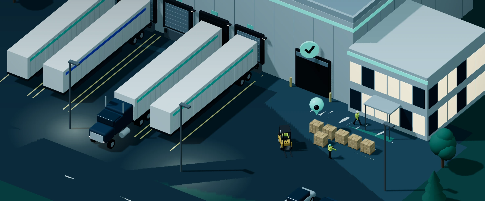
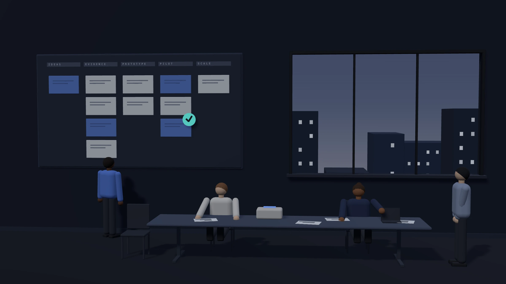
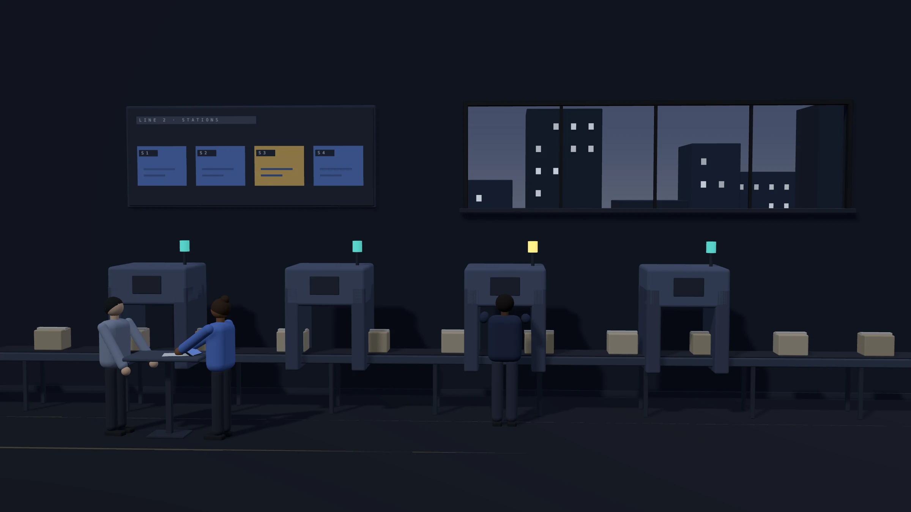
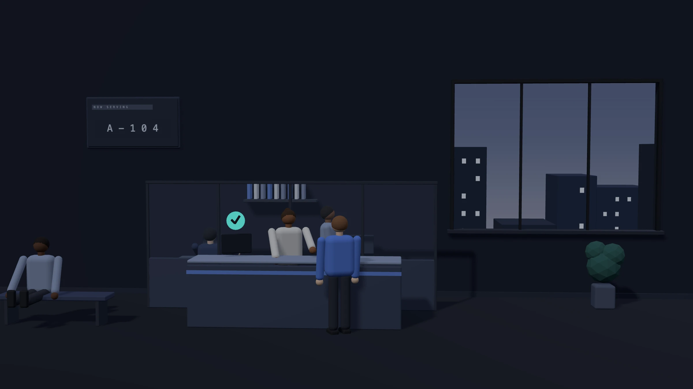
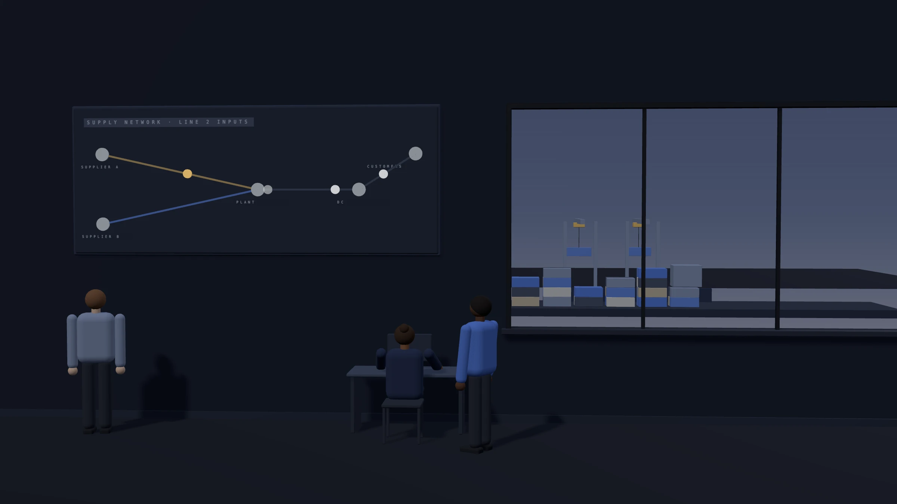

Choose the opportunity
Find the business constraint or opening that matters enough to act on.
This site stores your theme choice in your browser and uses no analytics or advertising cookies. Details are in the privacy notice.

Illustrative decisions shown in the animation:
A platform for business transformation
Build new sources of growth, change how work gets done, and create better experiences for the people you serve. AL Ops connects business ambition with practical change, starting with AI.
Talk through one business result.
Start with the opportunity you want to pursue or the constraint you need to remove.
A technology platform, backed by advisory and implementation. AI recommends, people decide.
Find the business constraint or opening that matters enough to act on.
Define what the future way of working should look like, including ownership and accountability.
Test a bounded solution against an agreed starting point and success criteria.
Plan adoption, operating responsibilities, and the conditions for expanding.
Illustrative interface. The four moves behind every engagement.
The business challenge
You need to deliver today while creating room for what comes next: a new offering, a different customer experience, or a way of working that can support the next stage of growth.
The question is not which technology to buy. It is what needs to change in the business, and what will make that change possible.
Transformation / Three pathways
01 / Growth
Explore new offerings, services, and ways to reach customers. Turn a promising idea into a proposition you can test, deliver, and develop.
Explore growth
Illustrative decisions shown in the animation:
02 / Operations
Change the work that slows your business down. Reduce avoidable handoffs, improve decisions, and help teams spend more time where their judgment matters.
Explore operations
Illustrative decisions shown in the animation:
03 / Customer experience
Connect what customers need with how your business responds. Design the journey and the operation behind it together.
Explore customer experience
Illustrative decisions shown in the animation:
Our platform / The loop
Every step leaves a record, and consequential actions wait for a person.
Explore our platformIllustrative interface and data.
The platform runs where your information has to stay, including sites with no connection to outside networks.
Built on data sovereignty
Information from each system is matched to the terms your business already uses, and stays traceable to where it came from.
Built on common language
AI works from a map of how your business runs: who you serve, what you have promised, and what it is allowed to change.
Built on operating model
Each task goes to the approved AI model best suited to how sensitive the information is and what the work demands.
Built on vendor choice
Answers arrive fast enough to use in the moment, dependably enough to rely on, and at a cost that holds up at volume.
Built on unit economics
AI follows the connected records to find what caused the problem and what it puts at risk.
Built on root cause
Each option is weighed against cost, commitments and constraints, then ranked. Waiting can be the right call.
Built on decision support
Your approval rules are applied the same way every time, and decide whether a person must sign off.
Built on approval limits
The accountable owner sees the recommendation, its evidence and its cost, then approves, edits or declines.
Built on accountability
The approved change is broken into tasks, and each goes to the right team or system, within agreed limits.
Built on automation
The change is carried out in the systems approved for this process, and every step can be seen as it happens.
Built on visibility
What was known, what was decided, who approved it and what happened are kept together, ready for review.
Built on audit trail
Results are measured against the starting point, and what is learned improves the next decision.
Built on measured results
What we bring
Advisory, a technology platform and implementation, brought together around the change your business needs.
Advisory
Define the opportunity, business case, future way of working, and measures of success.
Our approachPlatform
Provide the software capabilities that support the agreed change, starting with the verified AI offering.
Our platformImplementation
Configure, integrate, and introduce the solution into your operation, with adoption and handover responsibilities agreed in scope.
How we deliverOur principles
Cars, medicines, hospitals and buildings are not delivered on trust. They are designed before they are built, validated before they are used, recorded as they run and signed off by someone accountable.
Software once worked this way too. In the rush to ship faster, much of it was lost. We bring those principles back to advice, to technology and to implementation.
Select a discipline to see what we brought back from it.
Advisory
We find the cause and the result worth pursuing before recommending anything, and we recommend what fits.
Outcome, scope and acceptance criteria are agreed and written down before any work starts.
What could go wrong, and how it will be contained, is part of the plan from day one.
Technology
When the system is unsure, or the action is consequential, it stops and waits for a person.
Tested against its intended use, and retested whenever the model, data or rules change.
Every decision, source and approval leaves a record you can replay, like a batch record.
Implementation
Tested in your real environment against the agreed criteria before it goes live.
Consequential changes are checked by someone who did not make them, against a checklist.
You receive what was actually delivered, documented, so your team can run it without us.
We help you ship on principle: built right the first time, so there is less rework, fewer surprises in production and faster approval from risk and compliance. Your business can keep pace with demand and stay ahead of competitors in a fast-moving market, without trading speed for safety.
Accountability
AI can gather information, compare options and prepare the next step. People own the consequential calls.
A recommendation becomes an action only when its accountable owner approves it, and the approval leaves a record.
How AI governance works
Illustrative decisions shown in the animation:
Evidence / Illustrative scenarios
Specialist knowledge is delivered one engagement at a time, which limits how far the business can grow.
Explore growthOperationsResolving a customer or supplier exception takes repeated information gathering and several cross-team handoffs.
Explore operationsCustomer experienceNew customers repeat the same information to disconnected teams before they can start.
Explore customer experienceIndustryA supply interruption puts production and customer commitments at risk, and the recovery is worked out by email and spreadsheet.
Explore supply chainIllustrative scenarios.
Questions
AI is where we begin, but every engagement starts with a business result worth pursuing. The technology follows the decision about what needs to change.
Both, around one defined result: advisory to shape the change, a technology platform to enable it, and implementation to put it into practice.
Consequential or irreversible actions stop at an approval boundary until the accountable owner decides, and each run leaves an evidence record of what happened.
No. They are illustrative scenarios that show the problem, the change and how the result would be measured. They are not customer stories or reported results.
Define the change before deciding what to build.
Start with the opportunity you want to pursue or the constraint you need to remove.